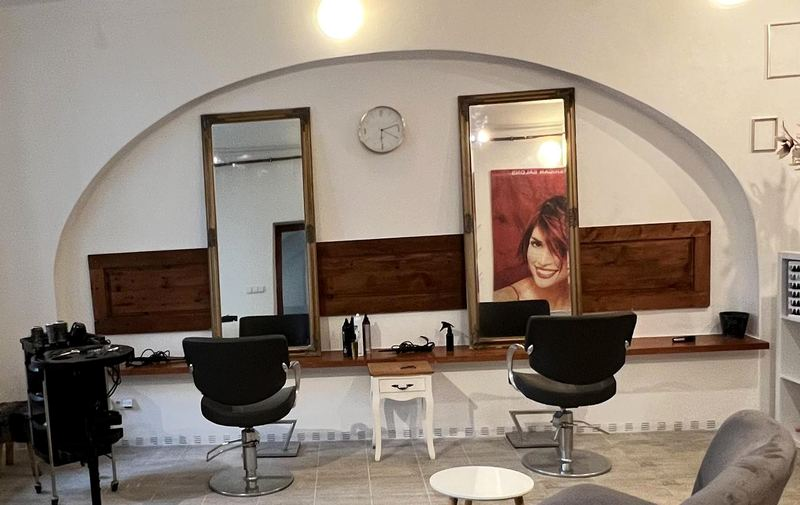
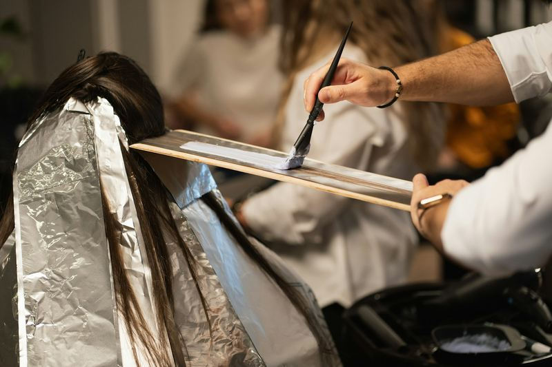
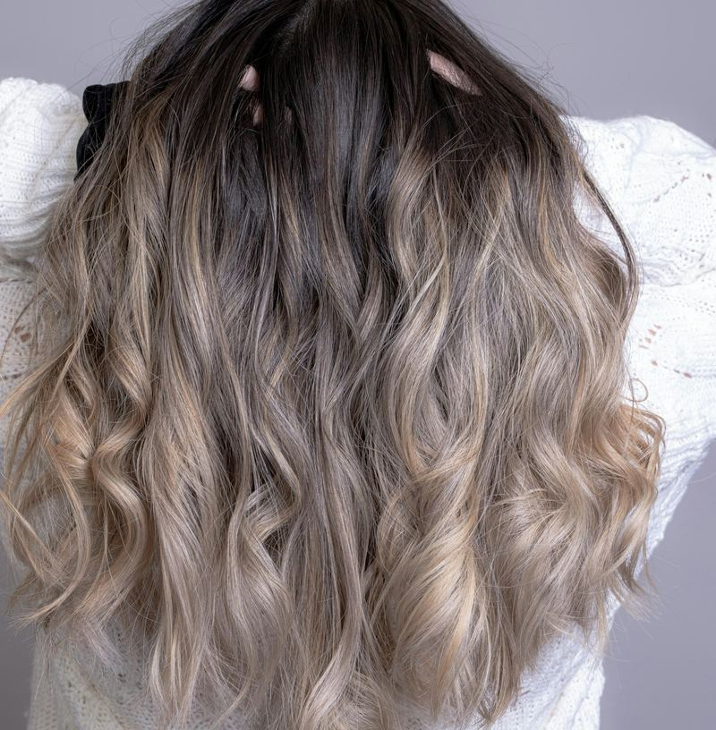
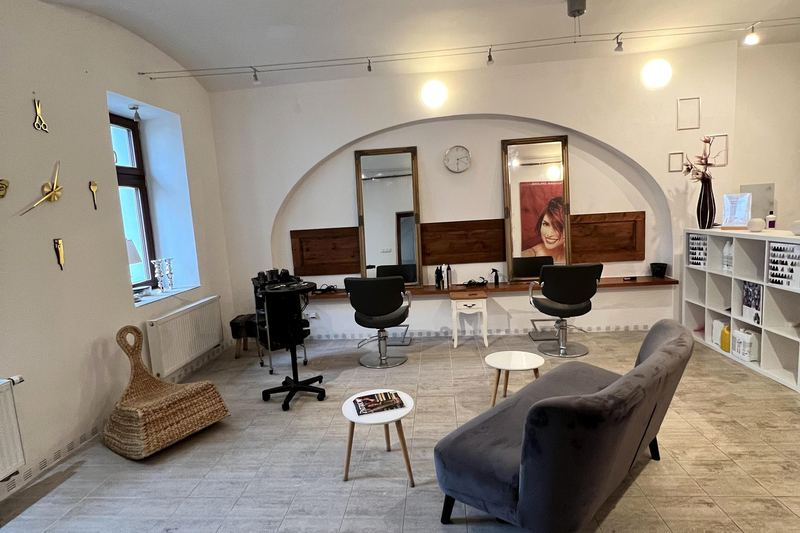

Střih a barva v Řeznické ulici
Andrea Šnytová, kadeřnice ve Frýdku. Stříhám, barvím a češu dámy i pány v salonu pod klenbou v Řeznické 31. Otevřeno mám v pracovní dny od 7 do 19 hodin.

S čím Vám pomůžu
- Dámský střihOd zastřižení konečků po úplně nový střih.
- Pánský střihKlasika i kratší moderní střihy.
- BarveníCelá barva i odrost. Odstín vybereme spolu.
- MelírProsvětlení pramenů do celé hlavy i jen kolem obličeje.
- Foukaná a účesyNa každý den i na svatbu nebo ples.





Salon pod klenbou
Dvě křesla, zrcadla ve zlatých rámech a pohovka, kde si počkáte na barvu. Najdete nás v Řeznické 31 ve Frýdku, kousek od náměstí.
5,0 ze 4 hodnocení na Firmy.cz
„Je to opravdu odbornice na svém místě. Odešla jsem s velmi dobrým účesem i pocitem.“
Andrea K.
„Jsem dlouhodobým klientem paní Šnytové, kterou mohu maximálně doporučit.“
Václav K.
„Maximální spokojenost, profesionální přístup, skvělý vzhled účesu.“
N. L.
- Adresa
- Řeznická 31, 738 01 Frýdek-Místek
- Otevřeno
- po–pá 7:00–19:00